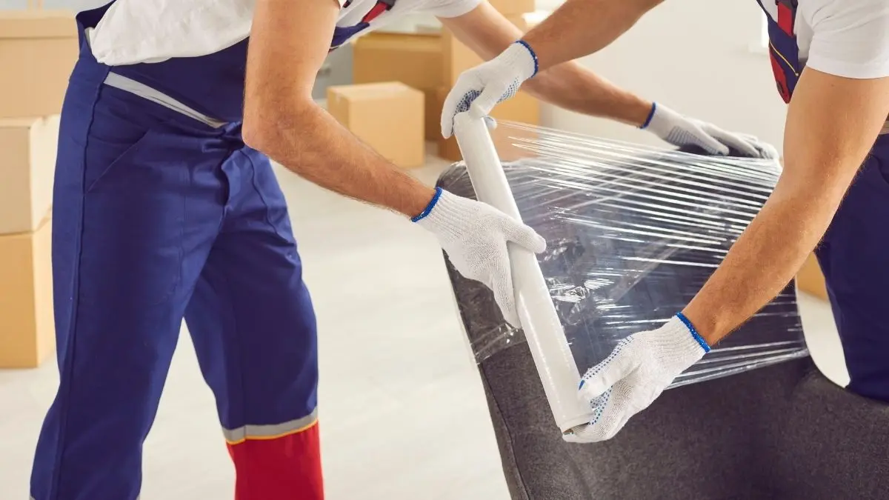

خدمات نقل العفش في ظهرة لبن 0559865517

مع التطور العمراني السريع الذي تشهده منطقة ظهرة لبن، يزداد الطلب على خدمات نقل عفش ظهرة لبن، حيث يواجه الأفراد والأسر تحديات عديدة أثناء الانتقال من منزل إلى آخر. فعملية النقل ليست مجرد تحريك الأثاث، بل تتطلب تخطيطًا دقيقًا، خبرة في التعامل مع القطع الحساسة، وأدوات متخصصة لحمايتها من التلف أو الخدوش ويمكنكم التواصل مع شركة نقل الرياض علي رقم 0559865517 او عبر الواتساب بالضغط هنا
أهمية الاعتماد على شركة متخصصة في نقل العفش
الاعتماد على شركة نقل عفش ظهرة لبن يضمن لك تجربة خالية من المتاعب. فالشركات المحترفة تمتلك فرق عمل مدربة قادرة على فك وتركيب الأثاث باحترافية، إلى جانب استخدام مواد تغليف متينة لحماية المفروشات والأجهزة الإلكترونية من الصدمات أثناء النقل. كما أن وجود سيارات نقل مجهزة بأنظمة تثبيت حديثة يساعد في وصول الأثاث إلى وجهته الجديدة دون أي ضرر.
شركة نقل الرياض – خبرة وجودة لا مثيل لها
في عالم نقل عفش ظهرة لبن، تبرز شركة نقل الرياض كخيار مثالي يجمع بين الحرفية والجودة. فمنذ تأسيسها، وضعت الشركة معايير صارمة لضمان تقديم خدمات متميزة تلبي احتياجات العملاء بكفاءة عالية. لا تقتصر خدمات الشركة على مجرد نقل العفش، بل تشمل فك وتركيب الأثاث بعناية، التغليف الاحترافي، والنقل باستخدام أحدث التقنيات والمعدات المتخصصة.
لماذا تختار شركة نقل الرياض؟
1. فريق عمل مدرب ومجهز بأحدث المعدات
تمتلك الشركة فريقًا مدربًا على أحدث تقنيات نقل عفش ظهرة لبن، بدءًا من فك وتركيب الأثاث، مرورًا بالتغليف المحكم، وصولًا إلى النقل الدقيق. كما يتم تزويد الفريق بأدوات متطورة لضمان التعامل السلس مع الأثاث الثقيل والهش على حد سواء.
2. استخدام مواد تغليف عالية الجودة لحماية العفش
تحرص الشركة على استخدام مواد تغليف فائقة الجودة، مثل الأغلفة البلاستيكية المقاومة للصدمات، وألواح الفوم لعزل الأثاث عن الخدوش، إضافة إلى الصناديق المقواة للأغراض الحساسة.
3. أسطول سيارات مجهز لنقل العفش بأمان
تمتلك الشركة أسطولًا حديثًا من الشاحنات وسيارات دينا المخصصة لنقل عفش ظهرة لبن، والمزودة بأنظمة تثبيت متقدمة لضمان استقرار الأثاث أثناء النقل، مما يمنع الاهتزازات والاحتكاك خلال الرحلة.
4. أسعار تنافسية مع جودة خدمة استثنائية
توفر الشركة خدماتها بأسعار عادلة تتناسب مع جودة العمل المقدم، كما تقدم عروضًا وخصومات موسمية تمنح العملاء فرصة الحصول على تجربة نقل عفش ظهرة لبن متميزة دون إرهاق الميزانية.
سيارات دينا نقل عفش ظهرة لبن – الخيار الأمثل للنقل الآمن
عند الحديث عن نقل عفش ظهرة لبن، فإن اختيار المركبة المناسبة يعد عنصرًا حاسمًا لضمان وصول الأثاث بسلامة تامة. تمتلك شركة نقل الرياض أسطولًا متكاملًا من سيارات دينا المصممة خصيصًا لنقل العفش بطريقة آمنة وسريعة، حيث تتميز بمساحتها الواسعة التي تتيح استيعاب قطع الأثاث الكبيرة دون الحاجة إلى تفكيكها بالكامل، مما يقلل من المخاطر المحتملة أثناء النقل.
ضمان سلامة العفش خلال عملية النقل
الأثاث ليس مجرد قطع خشبية أو معدنية، بل يحمل قيمة عاطفية أو مادية كبيرة، لذلك تتبع الشركة معايير صارمة لحمايته من أي ضرر محتمل أثناء النقل. يتم تغليف القطع الزجاجية والمرايا باستخدام طبقات مزدوجة من الفوم ومواد مقاومة للصدمات، في حين يتم استخدام أغطية قماشية للأثاث الخشبي لمنع الخدوش. كما توفر الشركة خدمة التأمين على العفش أثناء النقل، مما يمنح العملاء راحة البال.
تجربة نقل عفش ظهرة لبن سلسة وآمنة
عند اختيارك لشركة نقل الرياض، فأنت تضمن تجربة خالية من المتاعب، حيث تجمع الشركة بين الجودة، الاحترافية، والأمان في كل خطوة من خطوات النقل. من خلال الاعتماد على أحدث التقنيات، فريق عمل محترف، وأسعار تنافسية، تعد الشركة الخيار الأمثل لمن يبحث عن خدمة موثوقة لنقل عفش ظهرة لبن.
التخطيط المسبق لعملية النقل
التخطيط الجيد هو المفتاح لضمان عملية نقل عفش ظهرة لبن سلسة وناجحة. من الضروري وضع جدول زمني محدد يتضمن مراحل فك العفش، التغليف، النقل، وإعادة التركيب. توفر شركة نقل الرياض استشارات مجانية لمساعدة العملاء في التخطيط لنقل العفش بطريقة احترافية، مما يقلل من الوقت والجهد المبذول.
التعامل مع الأثاث القيم والتحف
تحتاج التحف الفنية والمقتنيات القيمة إلى عناية خاصة أثناء النقل. تعتمد شركة نقل الرياض على تقنيات تغليف متطورة تشمل استخدام صناديق خشبية مبطنة لحماية التحف والزجاجيات الثمينة، مما يضمن وصولها بأمان دون أي تلف.
خدمات تفريغ وتنظيم العفش بعد النقل
بعد وصول العفش إلى الوجهة الجديدة، يحتاج العملاء إلى ترتيب الأثاث بشكل ملائم. توفر الشركة خدمات تفريغ وترتيب العفش وفقًا لرغبة العميل، مما يسهل عملية التأقلم مع المكان الجديد ويوفر عليهم عناء إعادة التنظيم.
النقل بين المدن والمناطق المختلفة
توفر شركة نقل الرياض خدمات نقل عفش ظهرة لبن بين المدن داخل المملكة، حيث تتم عمليات النقل وفق خطة منظمة تضمن وصول الأثاث إلى أي منطقة في الوقت المحدد، مما يجعلها الخيار الأمثل لمن يحتاجون إلى نقل العفش لمسافات طويلة.
خدمة العملاء والدعم الفني
تولي شركة نقل الرياض اهتمامًا كبيرًا برضا العملاء، حيث توفر خدمة دعم فني متاحة على مدار الساعة للرد على الاستفسارات وتقديم المساعدة الفورية. يضمن هذا النهج تقديم تجربة نقل عفش ظهرة لبن مريحة وسلسة، مما يعزز من ثقة العملاء في خدمات الشركة.
خدمات التخزين المؤقت للأثاث
في بعض الحالات، قد يحتاج العملاء إلى تخزين الأثاث لفترة معينة قبل الانتقال إلى منزلهم الجديد. توفر شركة نقل الرياض خدمات تخزين مؤقتة في مستودعات آمنة ومجهزة بأحدث أنظمة الحماية. تتميز هذه المستودعات بمراقبة على مدار الساعة، وبيئة نظيفة تحافظ على الأثاث من الرطوبة والعوامل الجوية الضارة، مما يضمن بقاء العفش بحالته المثالية حتى موعد النقل.
نقل الأثاث المكتبي والتجاري
لا تقتصر خدمات نقل العفش على المنازل فقط، بل تمتد لتشمل المكاتب والشركات. توفر الشركة حلولًا متكاملة لنقل الأثاث المكتبي والأجهزة الإلكترونية، مع ضمان الحفاظ على الوثائق والمعدات الحساسة. كما تتيح خدمات النقل المرنة إمكانية النقل خلال أيام العطل أو في أوقات محددة لتجنب تعطيل العمل.
التعامل مع الأجهزة الكهربائية والمنزلية اثناء نقل عفش ظهرة لبن
نقل الأجهزة الكهربائية يتطلب دقة وحذرًا، حيث يتم فك وتغليف الأجهزة مثل الثلاجات، الغسالات، والتلفزيونات بطريقة تحميها من التلف. كما توفر الشركة خدمات إعادة التوصيل والتركيب بعد النقل، مما يضمن تشغيل الأجهزة بكفاءة في المنزل الجديد دون الحاجة إلى فنيين إضافيين.
التخلص من الأثاث القديم وإعادة التدوير
بعض العملاء قد يرغبون في التخلص من الأثاث القديم أثناء عملية النقل. تقدم الشركة خدمة التخلص من الأثاث غير المرغوب فيه بطريقة بيئية مسؤولة، إما عبر إعادة تدويره أو التبرع به للجمعيات الخيرية، مما يسهم في تقليل النفايات والاستفادة من الموارد بشكل مستدام.
الالتزام بالمواعيد والدقة في التنفيذ
أحد أهم المعايير التي تميز شركة نقل الرياض هو التزامها بالمواعيد المحددة، حيث يتم جدولة عملية النقل وفقًا لخطة منظمة تضمن تنفيذ كل مرحلة في الوقت المحدد. تعتمد الشركة على فريق محترف يحرص على تنفيذ المهام بكفاءة عالية، مما يمنح العملاء تجربة نقل سلسة دون تأخير أو مشاكل غير متوقعة.